Module 4 Time Series Patterns
So far, we have focused on pulling and visualizing data. However, we have not spoken about the Patterns that might exist and just what we look for in time series data.
Trend \((T_t)\)
- pattern exists when there is a long-term increase or decrease in the data. The trend may be produced, for example, by consistent population change, inflation, technological change, and productivity increases.
Cyclical \((C_t)\)
series of wavelike pattern exists when data exhibit rises and falls that are not of fixed period (duration usually of at least 2 years). Changing economic conditions generally produce cycles.
In practice, cycles are often difficult to identify and are frequently regarded as part of the trend. In this case, the underlying general growth (or decline) component is called the trend-cycle.
Seasonal \((S_t)\)
pattern exists when a series is influenced by seasonal factors (e.g., the quarter of the year, the month, or day of the week).
Seasonal variation refers to a more or less stable pattern of change that appears annually and repeats itself year after year.
Seasonal patterns occur because of the influence of the weather or because of calendar-related events such as school vacations and national holidays.
Random/Irregular \((I_t)\) - consists of unpredictable or random fluctuations. These fluctuations are the result of a myriad of events that individually may not be particularly important but whose combined effect could be large.
Differences between seasonal and cyclic patterns
Seasonal pattern constant length; cyclic pattern variable length.
Average length of cycle longer than length of seasonal pattern. - Magnitude of cycle more variable than magnitude of seasonal pattern
4.1 Cold Storage Data - Pork
Let us shift focus to pulling monthly Cold Storage values for Pork (1983:2020).
You will need your key from earlier. I will assume yours is stored using the keyring package.
# Step 1: Supply your Key
key <- keyring::key_get("tidyusda")
# Step 2: Use the API to pull Pork Cold Storage
pork <- tidyUSDA::getQuickstat(
key = key,
program = "SURVEY",
sector = "ANIMALS & PRODUCTS",
group = "LIVESTOCK",
commodity = "PORK",
category = "STOCKS",
data_item = "PORK, COLD STORAGE, FROZEN - STOCKS, MEASURED IN LB",
domain = "TOTAL",
geographic_level = "NATIONAL",
state = "US TOTAL",
year = as.character(1983:2020)
)
# Step 3 & 4: Keep only the relevant columns and declare as tsibble object
pork.ts <- pork %>%
# Convert the year + month index to a yearmonth object
mutate(date = yearmonth(paste(year,begin_code)),
# divide Value by 1 million and save over original column
Value = Value/1000000) %>%
select(date, Value) %>%
as_tsibble(index = date)
pork.ts## # A tsibble: 456 x 2 [1M]
## date Value
## <mth> <dbl>
## 1 1983 Jan 224.
## 2 1983 Feb 216.
## 3 1983 Mar 235.
## 4 1983 Apr 273.
## 5 1983 May 293.
## 6 1983 Jun 280.
## 7 1983 Jul 253.
## 8 1983 Aug 214.
## 9 1983 Sep 210.
## 10 1983 Oct 240.
## # ℹ 446 more rows# Step 5: Produce a time plot
pork.ts %>% autoplot(Value, color = "darkred") +
labs(title = "Pork Cold Storage",
subtitle = "(Million pounds)") +
theme_bw()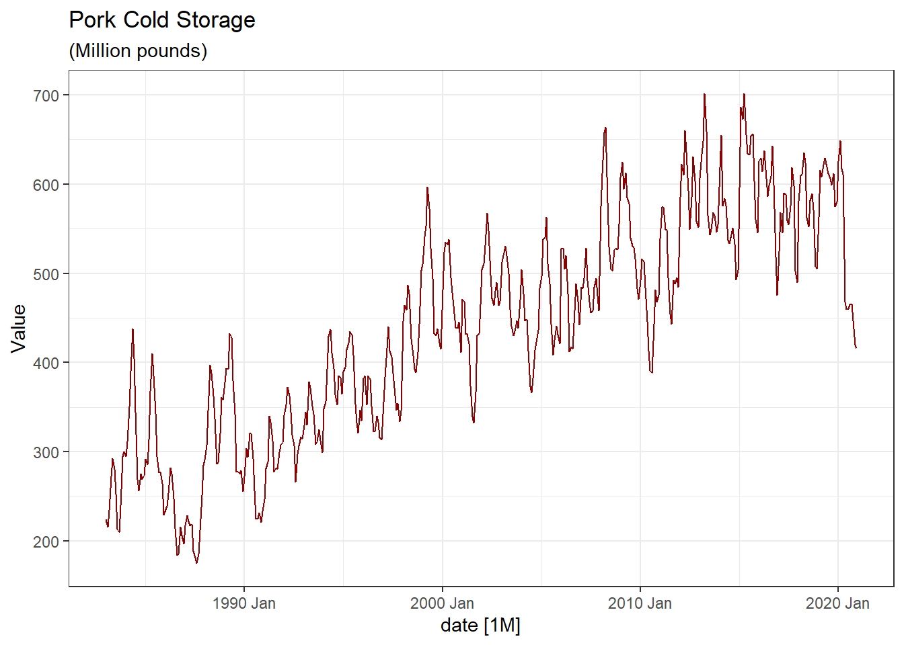
Exercise
Can you use the functions we covered earlier to explore the seasonal properties of this data?
What would you conclude regarding potential seasonality and/or trend.
Annualized data
We might be interested in the annual mean cold storage instead. Again, there are several ways to do this but we will stick with the tidyverse conventions.
pork.annual <- pork.ts %>%
# Group observations on year index
index_by(year = year(date)) %>%
# Compute the annual means
summarise(Value = mean(Value))
pork.annual## # A tsibble: 38 x 2 [1Y]
## year Value
## <dbl> <dbl>
## 1 1983 253.
## 2 1984 323.
## 3 1985 312.
## 4 1986 228.
## 5 1987 215.
## 6 1988 337.
## 7 1989 343.
## 8 1990 267.
## 9 1991 297.
## 10 1992 325.
## # ℹ 28 more rowsNow, you can produce a plot of the annual series.
pork.annual %>% autoplot(Value, color = "darkgreen") +
labs(title = "Annual Pork Cold Storage",
subtitle = "Million pounds",
x = "Year",
caption = "Source: NASS QuickStat") +
theme_bw() 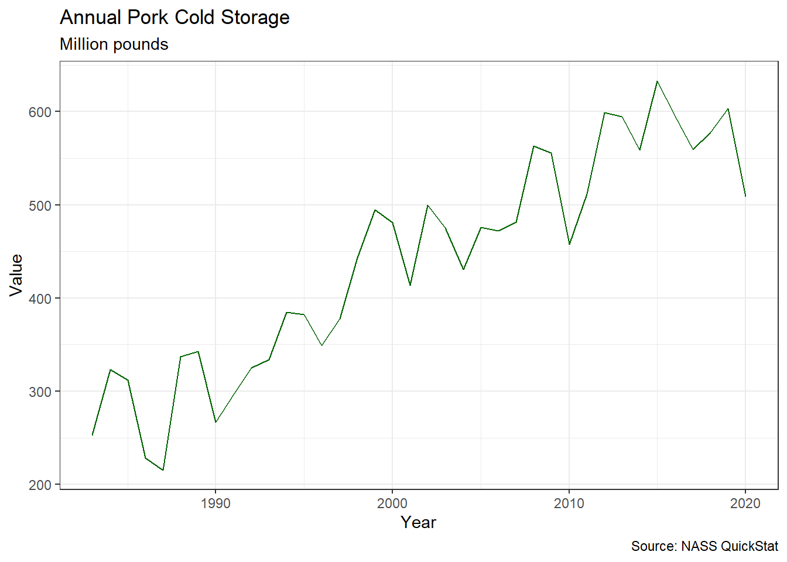
4.2 Moving Averages
Sometimes it could be helpful to see where the current series is relative to its historical average. Moving averages can be helpful in achieving this.
More formally, moving averages allow us to extract the long-term trend (and cycle) in the data.
Returning to our annual pork cold storage series, pork.annual, we can generate a centered 3-year moving averages.
sma3 <- pork.annual %>% mutate(
`3-MA` = slider::slide_dbl(Value, mean,
.before = 1, .after = 1,
.complete = TRUE)
)
sma3## # A tsibble: 38 x 3 [1Y]
## year Value `3-MA`
## <dbl> <dbl> <dbl>
## 1 1983 253. NA
## 2 1984 323. 296.
## 3 1985 312. 288.
## 4 1986 228. 252.
## 5 1987 215. 260.
## 6 1988 337. 298.
## 7 1989 343. 316.
## 8 1990 267. 302.
## 9 1991 297. 296.
## 10 1992 325. 319.
## # ℹ 28 more rowsNow we can produce a plot of the annual series and the simple moving average series.
sma3 %>% autoplot(Value) +
autolayer(sma3,`3-MA`, color = "darkorange") +
labs(title = "Pork Cold Storage", subtitle = "MA (3)") +
theme_bw()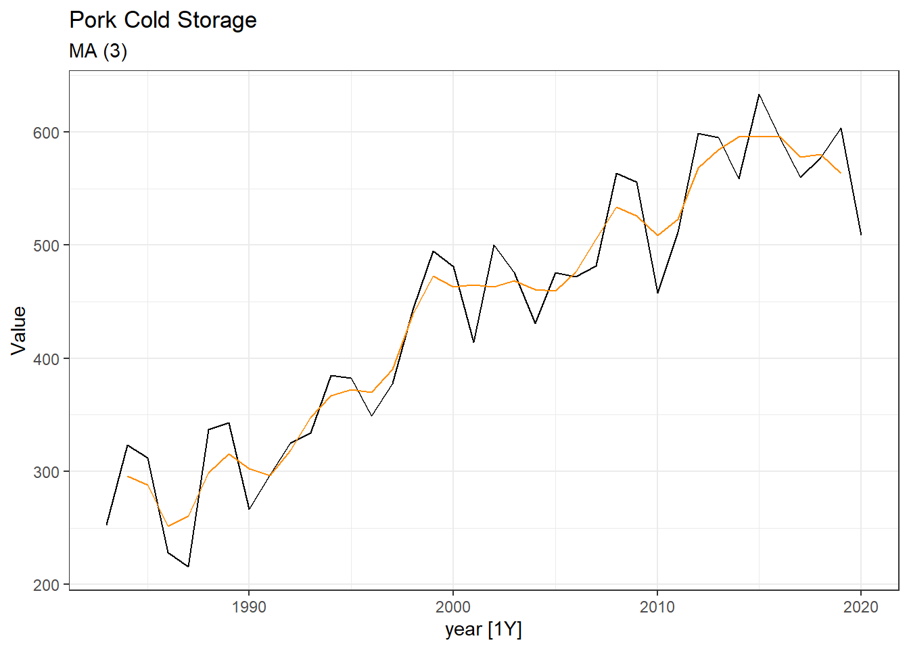
The trend-cycle component computed by the simple moving average is much smoother than the data itself. In fact, the choice of the “window” or number of data points used for smoothing will play a role in how smooth, or jagged our trend-cycle is. A larger order means smoother curves as it is less sensitive to extreme events during any particular period.
Repeating for multiple orders:
smas <- pork.annual %>% mutate(
`3-MA` = slider::slide_dbl(Value, mean,
.before = 1, .after = 1,
.complete = TRUE),
`5-MA` = slider::slide_dbl(Value, mean,
.before = 2, .after = 2,
.complete = TRUE),
`7-MA` = slider::slide_dbl(Value, mean,
.before = 3, .after = 3,
.complete = TRUE)
)
smas## # A tsibble: 38 x 5 [1Y]
## year Value `3-MA` `5-MA` `7-MA`
## <dbl> <dbl> <dbl> <dbl> <dbl>
## 1 1983 253. NA NA NA
## 2 1984 323. 296. NA NA
## 3 1985 312. 288. 266. NA
## 4 1986 228. 252. 283. 287.
## 5 1987 215. 260. 287. 289.
## 6 1988 337. 298. 278. 286.
## 7 1989 343. 316. 292. 287.
## 8 1990 267. 302. 314. 303.
## 9 1991 297. 296. 313. 327.
## 10 1992 325. 319. 321. 333.
## # ℹ 28 more rowsIt is not coincidental that all the orders used here are odd. If we use an even number (say the case of working with quarterly data), we are required to do double smoothing. We leave this as an exercise for the interested reader.
Visualizing the full model results
smas %>%
pivot_longer(-c(year,Value),
names_to = "Series",
values_to = "mean") %>%
ggplot(aes(x = year, y = mean, color = Series)) +
geom_line() +
geom_line(aes(x = year, y = Value), color = "black") +
facet_wrap(~Series, ncol = 2) +
guides(color = "none") +
theme_bw()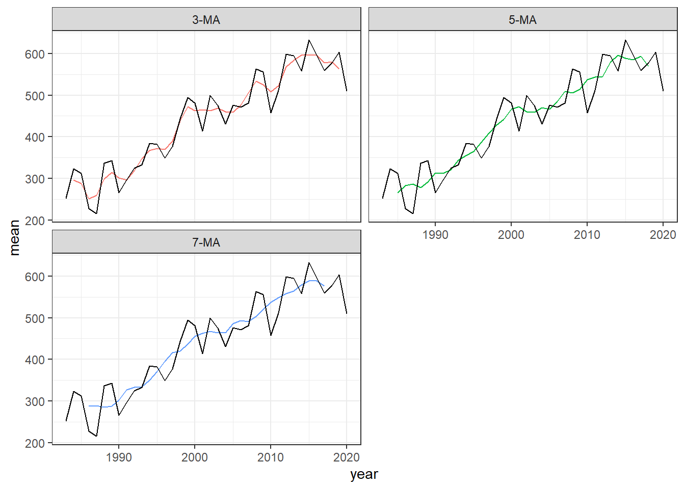
Model Deviation (Error)
If we were interested in visualizing how often our actual data deviates from the trend cycle, we could calculate the difference between the two.
sma3 %>%
mutate(error = Value - `3-MA`) %>%
autoplot(error) +
geom_point() +
geom_abline(slope = 0, lty = "dashed",
color = "red") +
labs(title = "Forecast Errors - MA(3)") +
theme_bw()## Warning: Removed 2 rows containing missing values
## (`geom_line()`).## Warning: Removed 2 rows containing missing values
## (`geom_point()`).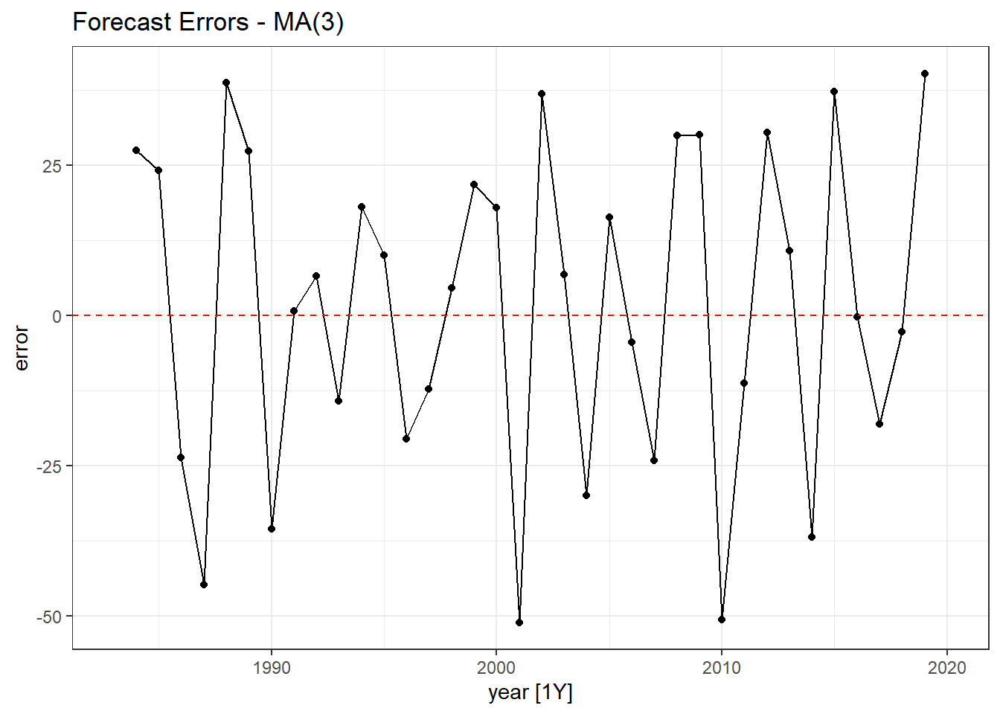
Final Words: Moving Averages
The forecast will lag turning points, if it captures them at all. There is a tendency to oversmooth at high orders.
In general, MAs can be used for forecasting only in series that lack seasonality and trend. There are a few popular methods for removing trends (de-trending) and removing seasonality (deseasonalizing) from a series:
- Advanced exponential smoothing methods,
- Regression models, and
- Differencing.
In the case of the moving averages, we assigned equal weights to the most recent observations as well as those far into the past. We can quickly see how this becomes problematic when forecasting data with structural breaks (changes drastically over time) etc.
4.3 Simple Exponential Smoothing (Again)
So far, we learned that this method is suitable for forecasting data with no clear trend or seasonal pattern.
Since the simple exponential smoothing model does not account for a potential trend nor seasonality, we saw that the out of sample forecast will be a flat line. Thankfully, there are other exponential smoothing models that account for either, and both, patterns.
4.3.1 Exponential Smoothing Adjusted for Trend
Holt’s Method
- allows for evolving local linear trends in a time series
- can be used to generate forecasts
- Advantage: flexible to track changing in level and trend
pork.annual %>%
model(holt = ETS(Value ~ error("A") + trend("A") + season("N"))) %>%
forecast(h = "15years") %>%
autoplot(pork.annual) +
labs(title = "Pork Cold Storage (Annual)",
subtitle = "Holt's Model") +
theme_bw()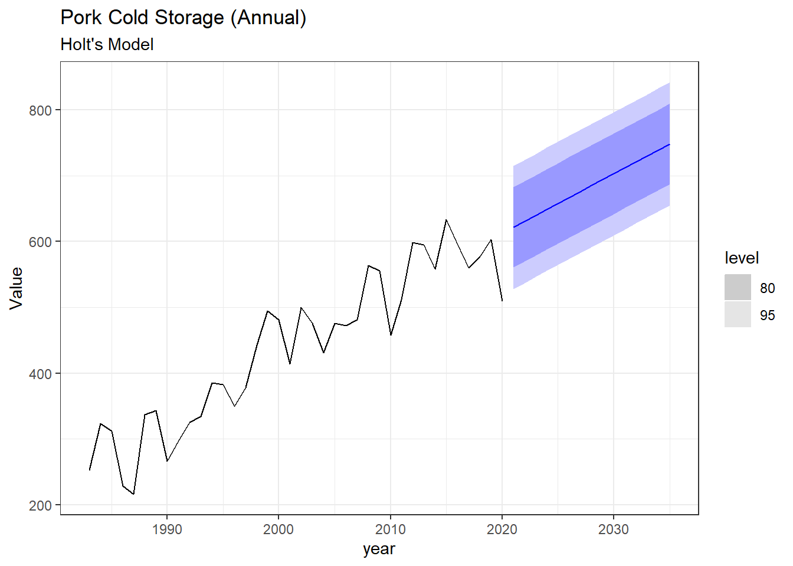
Our choice of 15 years is strictly for illustration purposes. This is intended to help with understanding the disadvantages of a standard Holt model and for comparison with the damped trend, below.
Holt’s Linear Trend Method with a Damped Trend
- The forecasts generated by Holt’s linear method display a constant trend (increasing or decreasing) indefinitely into the future.
- Empirical evidence indicates that these methods tend to over-forecast, especially for longer forecast horizons.
pork.annual %>%
model(holt_damped = ETS(Value ~ error("A") + trend("Ad") + season("N"))) %>%
forecast(h = "15years") %>%
autoplot(pork.annual) +
labs(title = "Pork Cold Storage (Annual)",
subtitle = "Holt's Model with Damped Trend") +
theme_bw()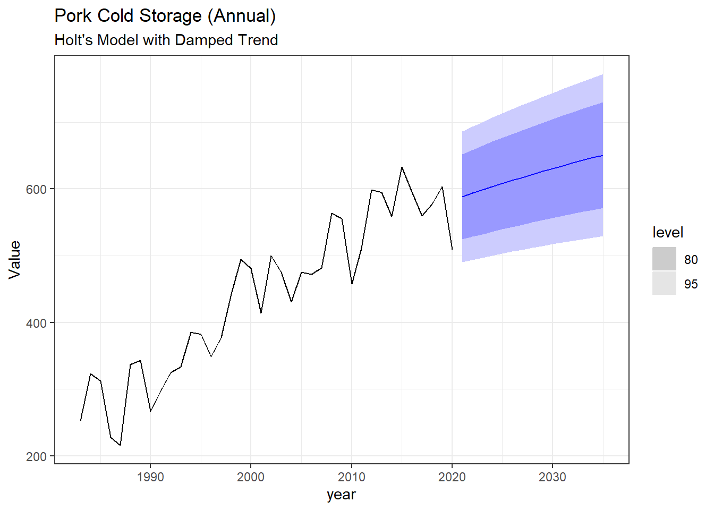
4.4 Exponential Smoothing Adjusted for Trend & Seasonality
Holt-Winter’s Exponential Smoothing Methods
- Holt-Winter’s method provides an easy way to account for seasonality when data have a seasonal pattern.
We can now shift focus to the monthly cold storage data stored earlier, pork.ts.
pork.ts %>%
model(holtwinters = ETS(Value ~ error("A") + trend("A") + season("A"))) %>%
forecast(h = "2years") %>%
autoplot(pork.ts, size = 1) +
labs(title = "Pork Cold Storage (Monthly)",
subtitle = "Holt-Winter's Model") +
theme_bw()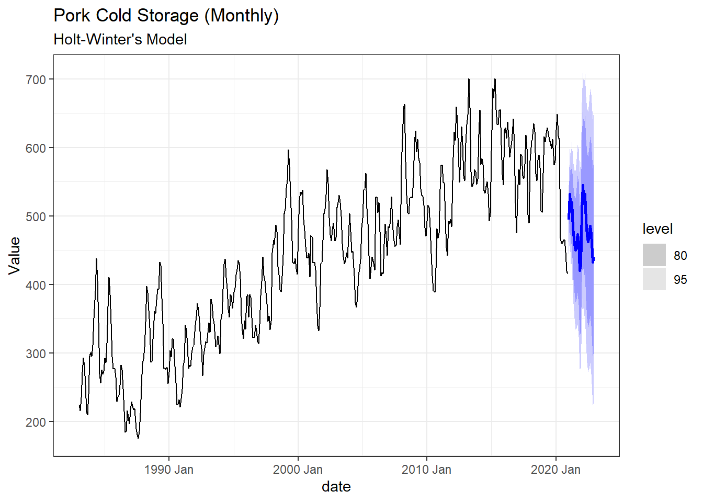
4.5 Time Series Regression Analysis
For this section, we will maintain our focus on the monthly pork cold storage series. Declaring our series as a tsbibble object earlier has a number of advantages. For example, it removes the need to manually create some of the variables we will need in this section. In particular, we can estimate regresssions using trends and seasonal dummies using the trend and seasons command in the tslm function.
4.5.1 Accounting for (Linear) Trends
We can introduce a trend by including \(x_t = t\) as a regressor
\[\begin{equation}\tag{1} y_t = \beta_0 + \beta_1 t + \varepsilon_t \end{equation}\]
where \(t = 1, 2, \ldots, T\). Here \(T\) is the total number of years in the dataset.
We can estimate the linear trend model as follows:
## # A tibble: 2 × 6
## .model term estimate std.error statistic p.value
## <chr> <chr> <dbl> <dbl> <dbl> <dbl>
## 1 TSLM(Value… (Int… 255. 5.88 43.3 2.16e-163
## 2 TSLM(Value… tren… 0.811 0.0223 36.4 1.31e-136In the codes above, we estimate the regression implied by Equation (1) and store it as model1. Next, we used the tidy() function to extract the stored regression results.
The value on the trend term implies that, on average, pork cold storage increases by 0.811 million pounds per month.
Digression: How would we account for a potential quadratic trend trend model?
Our model would look like
\[y_t = \beta_0 + \beta_1 t + \beta_2 t^2
+ \varepsilon_t\] We can perform mathematical manipulations in
the time series linear model (TSLM) function using
I() . Alternatively, we could create a squared trend
variable manually.
The former can be coded quickly as:
model.sqr <- pork.ts %>% model(TSLM(Value ~ trend() + I(trend()^2)))
model.sqr %>% tidy()
4.5.2 Accounting for Seasonality
We can test/account for seasonality in the monthly series by including monthly dummies using the season() argument in the TSLM command.
What is a Dummy?
If a categorical variable takes only two values (e.g., ‘Yes’ or ‘No’), then we can construct a numerical variable taking value 1 if yes and 0 if no, for example. This is called a dummy variable.
Suppose we have quarterly retail sales data and suspect that there might be seasonality in our data (e.g. Q4 might have unusually high sales figures since we have Thanksgiving, Black Friday, Cyber Monday, and Christmas in Nov. & Dec.)
| \(Q_{1,t}\) | \(Q_{2,t}\) | \(Q_{3,t}\) | |
|---|---|---|---|
| 2000 Q1 | 1 | 0 | 0 |
| 2000 Q2 | 0 | 1 | 0 |
| 2000 Q3 | 0 | 0 | 1 |
| 2000 Q4 | 0 | 0 | 0 |
| 2001 Q1 | 1 | 0 | 0 |
| 2001 Q2 | 0 | 1 | 0 |
| 2001 Q3 | 0 | 0 | 1 |
| 2001 Q4 | 0 | 0 | 0 |
Caution: When estimating our regressions, we must leave out one of the dummy variables. The omitted dummy is referred to as the base/reference group.
For example, in our monthly series, we will omit season()year1 or January. The value on the remaining monthly dummies are all relative to January.
The seasonal model is estimated as
\[\begin{equation}\tag{2} y_t = \beta_0 + \beta_1 \underset{season()year2}{Feb} + \beta_2 \underset{season()year3}{March} + \ldots + \beta_{11} \underset{season()year4}{Dec} + \varepsilon_t \end{equation}\]
where \(\text{Feb}, \text{March}, \ldots, \text{Dec}\) are monthly dummies that take a value of 1 if the observation corresponds to that month and \(0\) otherwise.
## Series: Value
## Model: TSLM
##
## Residuals:
## Min 1Q Median 3Q Max
## -273.96 -96.92 14.53 95.63 248.37
##
## Coefficients:
## Estimate Std. Error t value Pr(>|t|)
## (Intercept) 449.011 19.766 22.716 <2e-16 ***
## season()year2 20.362 27.954 0.728 0.467
## season()year3 20.293 27.954 0.726 0.468
## season()year4 42.715 27.954 1.528 0.127
## season()year5 25.960 27.954 0.929 0.354
## season()year6 -7.338 27.954 -0.263 0.793
## season()year7 -28.863 27.954 -1.033 0.302
## season()year8 -43.625 27.954 -1.561 0.119
## season()year9 -33.663 27.954 -1.204 0.229
## season()year10 -27.294 27.954 -0.976 0.329
## season()year11 -39.000 27.954 -1.395 0.164
## season()year12 -39.311 27.954 -1.406 0.160
## ---
## Signif. codes:
## 0 '***' 0.001 '**' 0.01 '*' 0.05 '.' 0.1 ' ' 1
##
## Residual standard error: 121.8 on 444 degrees of freedom
## Multiple R-squared: 0.05479, Adjusted R-squared: 0.03137
## F-statistic: 2.34 on 11 and 444 DF, p-value: 0.0083218Our regression results suggest that, on average, pork cold storage for February is 20.362 million pounds higher than January. However, June to December are persistently lower than January (looking at the sign here).
The mean value for January is represented by the intercept. The average cold storage for January is 449.011 million pounds.
If we would like to determine the mean values for the remaining months, we need only add the intercept to the value of estimate for that month. For example, the mean pork cold storage for August would be 405.386 million pounds.
4.6 Accounting for Seasonality and Trend
\[\begin{equation}\tag{3} y_t = \beta_0 + \beta_1 Feb + \beta_2 March + \ldots + \beta_{11} Dec + \beta_{12} t + \varepsilon_t \end{equation}\]
We estimate Equation (3) by combining the 2 code chunks earlier.
## Series: Value
## Model: TSLM
##
## Residuals:
## Min 1Q Median 3Q Max
## -188.146 -34.757 1.315 37.754 134.854
##
## Coefficients:
## Estimate Std. Error t value Pr(>|t|)
## (Intercept) 267.09181 9.92159 26.920 < 2e-16 ***
## season()year2 19.54583 12.60390 1.551 0.121670
## season()year3 18.66149 12.60395 1.481 0.139422
## season()year4 40.26716 12.60402 3.195 0.001499 **
## season()year5 22.69638 12.60413 1.801 0.072429 .
## season()year6 -11.41700 12.60427 -0.906 0.365532
## season()year7 -33.75747 12.60443 -2.678 0.007677 **
## season()year8 -49.33543 12.60463 -3.914 0.000105 ***
## season()year9 -40.18887 12.60486 -3.188 0.001532 **
## season()year10 -34.63588 12.60512 -2.748 0.006245 **
## season()year11 -47.15766 12.60540 -3.741 0.000207 ***
## season()year12 -48.28471 12.60572 -3.830 0.000146 ***
## trend() 0.81578 0.01955 41.725 < 2e-16 ***
## ---
## Signif. codes:
## 0 '***' 0.001 '**' 0.01 '*' 0.05 '.' 0.1 ' ' 1
##
## Residual standard error: 54.94 on 443 degrees of freedom
## Multiple R-squared: 0.8083, Adjusted R-squared: 0.8031
## F-statistic: 155.6 on 12 and 443 DF, p-value: < 2.22e-164.7 Visualizing the model fits
We can use the augment command to see all the elements stored in our model fits earlier.
## # A tsibble: 456 x 6 [1M]
## # Key: .model [1]
## .model date Value .fitted .resid .innov
## <chr> <mth> <dbl> <dbl> <dbl> <dbl>
## 1 TSLM(Value ~ tren… 1983 Jan 224. 255. -31.3 -31.3
## 2 TSLM(Value ~ tren… 1983 Feb 216. 256. -40.4 -40.4
## 3 TSLM(Value ~ tren… 1983 Mar 235. 257. -22.3 -22.3
## 4 TSLM(Value ~ tren… 1983 Apr 273. 258. 14.8 14.8
## 5 TSLM(Value ~ tren… 1983 May 293. 259. 34.3 34.3
## 6 TSLM(Value ~ tren… 1983 Jun 280. 260. 20.9 20.9
## 7 TSLM(Value ~ tren… 1983 Jul 253. 260. -7.33 -7.33
## 8 TSLM(Value ~ tren… 1983 Aug 214. 261. -47.1 -47.1
## 9 TSLM(Value ~ tren… 1983 Sep 210. 262. -52.0 -52.0
## 10 TSLM(Value ~ tren… 1983 Oct 240. 263. -22.7 -22.7
## # ℹ 446 more rowsIt might prove helpful to visualize a plot of the actual data against the fitted values. We can therefore return to our select function from earlier.
model1 %>% augment() %>%
#plot the actual series
ggplot(aes(x = date, y = Value)) +
geom_line() +
# Add fitted values column
geom_line(aes(y = .fitted),color = "darkblue",
size = 1) +
labs(title = "Forecasts - Trend Model") +
theme_bw()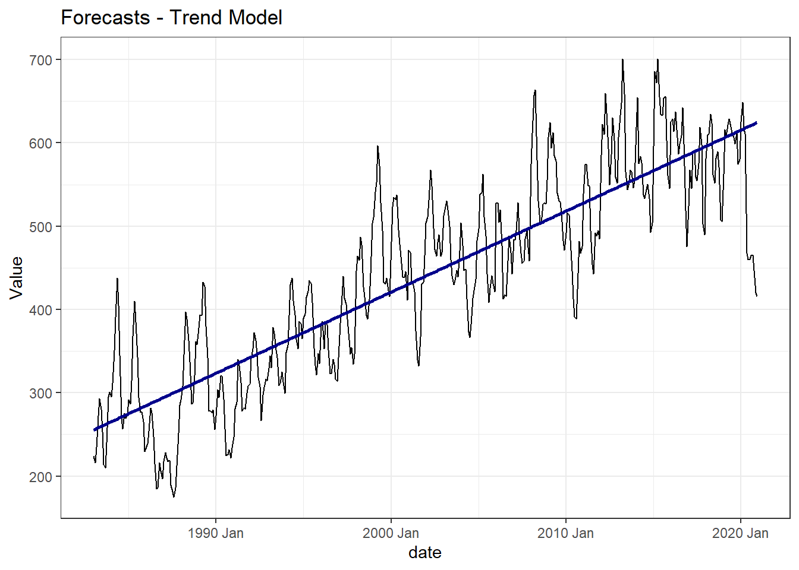
Let us merge all the codes above to extract the fitted values of our three models and produce a single plot that allows us to visualize the data and the fits of all the models.
full.mod <- pork.ts %>%
model(trend = TSLM(Value ~ trend()),
season = TSLM(Value ~ season()),
trend_season = TSLM(Value ~ trend() + season()))
full.mod %>% augment()## # A tsibble: 1,368 x 6 [1M]
## # Key: .model [3]
## .model date Value .fitted .resid .innov
## <chr> <mth> <dbl> <dbl> <dbl> <dbl>
## 1 trend 1983 Jan 224. 255. -31.3 -31.3
## 2 trend 1983 Feb 216. 256. -40.4 -40.4
## 3 trend 1983 Mar 235. 257. -22.3 -22.3
## 4 trend 1983 Apr 273. 258. 14.8 14.8
## 5 trend 1983 May 293. 259. 34.3 34.3
## 6 trend 1983 Jun 280. 260. 20.9 20.9
## 7 trend 1983 Jul 253. 260. -7.33 -7.33
## 8 trend 1983 Aug 214. 261. -47.1 -47.1
## 9 trend 1983 Sep 210. 262. -52.0 -52.0
## 10 trend 1983 Oct 240. 263. -22.7 -22.7
## # ℹ 1,358 more rowsfull.mod %>% augment() %>%
ggplot(aes(x = date, y = Value)) +
geom_line() +
geom_line(aes(y = .fitted, color = .model),
size = 0.7) +
labs(title = "Model Fits",
subtitle = "Pork Cold Storage") +
theme_bw()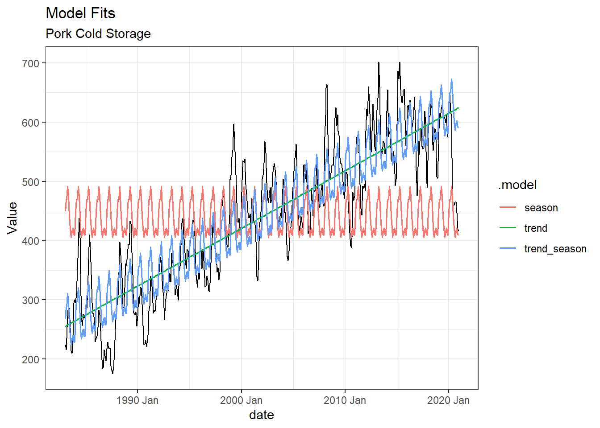
Without formal testing (just from eyeballing the graph), it appears that the Trend+seasonal dummies model does the best job of forecasting the monthly series. We will cover formal testing in a later module.
We can use the forecast function to create out-of-sample forecasts of our 3 models.
It is worthwhile to note that the trend value and dummies are always known into the future so we will not have a problem with unknown data at the time of forecasting.
Our forecast will become a lot more complicated when we have other economic variables on the right hand side. We will also need forecasts of their future values, before we are able to forecast our true variable of interest.
## # A fable: 72 x 4 [1M]
## # Key: .model [3]
## .model date Value .mean
## <chr> <mth> <dist> <dbl>
## 1 trend 2021 Jan N(625, 3959) 625.
## 2 trend 2021 Feb N(626, 3960) 626.
## 3 trend 2021 Mar N(627, 3960) 627.
## 4 trend 2021 Apr N(628, 3960) 628.
## 5 trend 2021 May N(628, 3960) 628.
## 6 trend 2021 Jun N(629, 3961) 629.
## 7 trend 2021 Jul N(630, 3961) 630.
## 8 trend 2021 Aug N(631, 3961) 631.
## 9 trend 2021 Sep N(632, 3961) 632.
## 10 trend 2021 Oct N(632, 3961) 632.
## # ℹ 62 more rowspork.forecast %>%
autoplot(pork.ts, level = NULL,
size = 0.8) +
labs(title = "Forecasted Pork cold Storage",
subtitle = "Next 24 Months") +
guides(color = guide_legend(title = "Forecast")) +
theme_bw()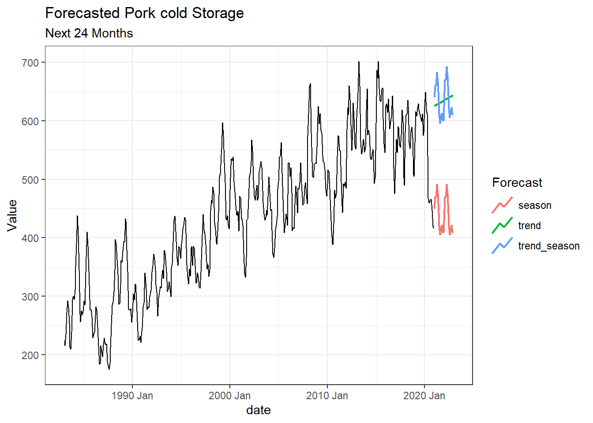
4.8 Autoregressive Models
4.8.1 AR(1) model
Sometimes it might be useful to use past values of \(y\) to help in predicting the \(y\)’s future values. Such models are referred to as Auto-regressive lag models.
For example:
The price in the next period might be a function of the price observed today.
\[p_t = \alpha + \beta p_{t-1} + \varepsilon_t\] where \(p_t\) could refer to prices (value) of our frozen pork stock.
Since this model includes only 1 lag of the \(y\) variable, this is referred to as an AR(1) model.
We will use the lag function to quickly create our lagged variables.
## # A tsibble: 456 x 3 [1M]
## date Value l.pork
## <mth> <dbl> <dbl>
## 1 1983 Jan 224. NA
## 2 1983 Feb 216. 224.
## 3 1983 Mar 235. 216.
## 4 1983 Apr 273. 235.
## 5 1983 May 293. 273.
## 6 1983 Jun 280. 293.
## 7 1983 Jul 253. 280.
## 8 1983 Aug 214. 253.
## 9 1983 Sep 210. 214.
## 10 1983 Oct 240. 210.
## # ℹ 446 more rowsNow to estimate the equation above
## Series: Value
## Model: TSLM
##
## Residuals:
## Min 1Q Median 3Q Max
## -137.352 -19.121 -2.019 18.490 116.539
##
## Coefficients:
## Estimate Std. Error t value Pr(>|t|)
## (Intercept) 16.7666 5.5298 3.032 0.00257 **
## l.pork 0.9628 0.0121 79.573 < 2e-16 ***
## ---
## Signif. codes:
## 0 '***' 0.001 '**' 0.01 '*' 0.05 '.' 0.1 ' ' 1
##
## Residual standard error: 31.95 on 453 degrees of freedom
## Multiple R-squared: 0.9332, Adjusted R-squared: 0.9331
## F-statistic: 6332 on 1 and 453 DF, p-value: < 2.22e-16Visualizing the AR(1) model fit
We can use the autoplot to visualize the fit of the AR(1) model.
mod.ar1 %>% augment() %>%
ggplot(aes(x= date, y = Value)) +
geom_line() +
geom_line(aes(y = .fitted), color = "red") +
labs(title = "AR(1) Model Fit") +
theme_bw()## Warning: Removed 1 row containing missing values
## (`geom_line()`).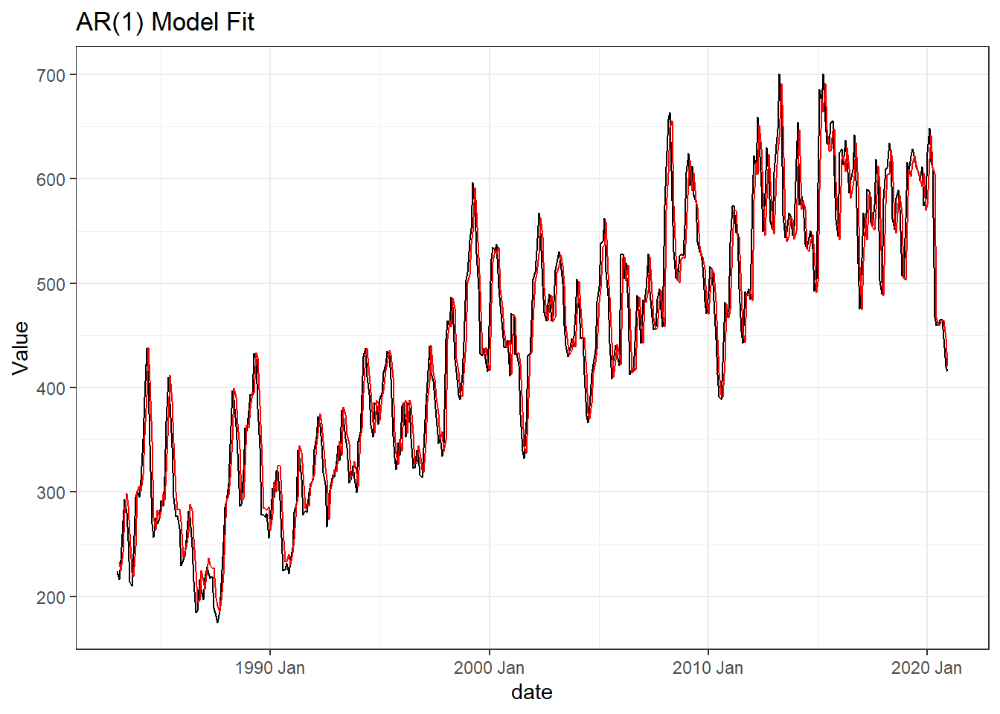
-
At the end of your sample, you will be able to estimate a 1-step ahead out-of-sample forecast as all values are known.
-
As you move beyond that single period, you will not be able to forecast without telling
Rwhat your guess of the new data will be. -
You could circumvent this issue using scenario based forecasts. That is however beyond the scope of this module.
4.8.2 AR(p) model
We could generalize to an AR(p) model.
\[\begin{align*} y_t &= \alpha + \beta_1 y_{t-1} + \beta_2 y_{t-2} + \ldots + \beta_p y_{t-p} + \varepsilon_t\\ \longrightarrow y_t &= \alpha + \beta_i \sum_{i = 1}^{p} y_{t-p} + \varepsilon_t \end{align*}\]
The choice of the optimal \(p\) can be determined by a number of model selection criteria (this is the focus of a later module).
Exercise
Using the tidyUSDA package, import price data for a commodity of your choice from 1990 – 2020.
Following the forecasting techniques in this and the previous module:
- obtain the monthly series declared as a
tsibbleobject with the appropriate index. - present a time series plot of the data.
- comment on what patterns you observe from part 2.
- produce a forecast for the next 2 years using
- Holt’s Method
- Holt-Winter’s Method
- present the model summaries from the following model using a regression approach
- Trend Model
- Seasonal Model (using dummies)
- Trend and Seasonal Model
- present a single graph of the data against the fitted values of each of the three models from your results in 5. Which model appears to do the best job at predicting your price series?
- produce a forecast for the next 2 years using your preferred model in 6.